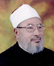

|

Yusuf Al Qaradawi |
|
Professor Dr. Yusuf Al Qaradawi is the greatest living Islamic scholar commanding great respect and admiration of the whole world for his combination of deep Islamic knowledge with the understanding of its place in the contemporary world. He is the great exponent of balance between fundamental teachings of Islam and moderation. He has always been at pains to emphasize the need for dialogue between Islam and the West. Eminent Egyptian scholar Dr. Qaradawi was born in 1926. He memorized the entire Quran at the age of ten and mastered the Tajweed, rules of recitation of the Quran. He studied at the Al Azhar from elementary to university level. He obtained PhD in 1973 from the Faculty of Usul al Deen from Al Azhar University. While studying in the Al Azhar Institute at the secondary level Dr. Qaradawi was named by his teachers Allama meaning the great scholar for his brilliant academic performances. In 1958 he obtained Diploma-in-Arabic Language and Literature. Earlier he achieved Teacher’s Certificate from the Faculty of Arabic Language. Dr. Qaradawi was a member of the Board of Religious Affairs of the Ministry of Awqaf, Government of Egypt. He was also the Chairman of the Islamic Scientific Council of the Algerian Universities. He is at present the member of the Jeddah based OIC Fiqh Academy, the Fiqh Academy of the Makkah based Rabitat Al Alam Al Islami, the Royal Academy for Islamic Culture and Research Jordan, the Islamic Studies Center Oxford and President of European Council for Fatwa and Research. Currently he is also the Dean of the Faculty of Shariah and Islamic Studies and the Director of the Center for Sunnah and Sirah Studies at the University of Qatar. He is also a member of the Board of Trustees of the International Islamic University Chittagong, Bangladesh. He has to his credit over forty-two published books many of which have been translated in various languages of the world including English, Turkish, Persian, Urdu and Indonesian. In all his six books have been translated into Bengali. His books in English language are also available in website <www.qaradawi.net/english>. He is a poet well known for his distinctive style. Currently he presents a weekly live discussion program in the Al Jazeera Television watched by millions of Muslims worldwide. He is an Islamic activist since his early boyhood and suffered imprisonment in 1949, 1954-1956 and 1965. He is highly critical of the manner in which the West particularly US and Britain conduct their foreign policies especially with the Arab and Islamic countries. He has condemned the US blind, unrestricted and unconditional support to Israel in the Palestinian conflict. His recent comments as to the US-led military campaign against Iraq have contributed significantly to sharpen worldwide Muslim public opinion decrying this US-UK action. He is also an eloquent exponent of human rights, and vocal in protecting women’s rights that was reflected in his firm stand taken in favor of women’s education and empowerment. He has widely traveled both the West and the East including Arab and Muslim countries. In the recent past Dr. Qaradawi also visited Bangladesh sever times. |